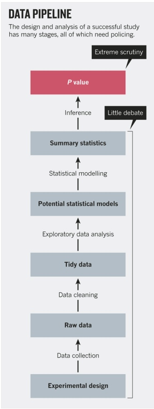

10 reproducibility and the replication crisis
Probability theory is elegant, and the logic of Null Hypothesis Significance Testing (NHST) is compelling. But philosophers of science have long recognized that this is not really how science works (Lakatos 1969). That is, science is not primarily built by the testing and rejecting of null hypotheses. (Think, for example, of how you might describe an experiment for testing the hypothesis that gravity exists, and whether you would ever reject this hypothesis).
The problem is a multifaceted one. It arises partly because, in any experiment, there is a large (infinite?) number of conditions which might be invoked to explain-away results of a failure of our work. It arises because we are human, and prone to various biases of decision making and information integration (that is, we are poor Bayesians). It arises, too, because scientific institutions such as journals, funding agencies, and universities are competitive environments which incentivize positive findings.
In recent years, the tension between the false ideal of NHST and the real world of science has become increasingly evident. Within psychology, experimental studies have often - even typically - failed to replicate well-known results (Open Science Collaboration 2015). It’s not just psychology (Baker 2016). One of the first important papers to shine light in the area (Ioannidis 2005) came from medicine; it suggested six contributing factors, which I quote verbatim here:
The smaller the studies conducted in a scientific field, the less likely the research findings are to be true.
- This stems directly from our discussion of the central limit theorem and the instability of results from small samples.
The smaller the effect sizes in a scientific field, the less likely the research findings are to be true
- We’ll talk about effect size below.
The greater the number and the lesser the selection of tested relationships in a scientific field, the less likely the research findings are to be true. (and) The greater the flexibility in designs, definitions, outcomes, and analytical modes in a scientific field, the less likely the research findings are to be true.
- The “problem” of analytic flexibility leads to ‘p-hacking’
The greater the financial and other interests and prejudices in a scientific field, the less likely the research findings are to be true and The hotter a scientific field (with more scientific teams involved), the less likely the research findings are to be true.
- Positive findings rise, and negative ones are ignored. And scientists are human, and subject to incentives.
Here’s a video which provides some more context for the crisis:
 .
.
*Video 10.1: On the reproducibility crisis (12 mins)
10.1 Answers to the reproducibility crisis
For scientific progress to occur, there needs to be more than a simple rejection of what is wrong with current methods and research programs: Here, as elsewhere, criticism must be constructive to be valuable.
There have been a number of solutions proposed to the reproducibility crisis.
10.1.1 Tweak or abandon NHST
The first cluster of responses to the reproducibility crisis is concerned with statistics, specifically problems with Null Hypothesis Significance Testing (NHST). These include (a) justifying one’s alpha - making it more stringent, for example, for counter-intuitive claims (Grange et al. 2018), (b) changing the default p value from .05 to .005 (Benjamin et al. 2018), and (c) abandoning significance testing altogether (McShane et al. 2017).
(Szucs and Ioannidis 2017) goes into some of these issues in more detail and discusses other limitations of significance testing, including the dichotomous, all-or-none silliness of the accept/reject decision. (If you play the NHST game, there is no ‘almost’ significant, ‘approached significance,’ ‘highly significant’, etc.).
(Leek and Peng 2015) argue that the problems are not merely with NHST, but with the whole of data analysis. They maintain that better training in data science - courses like ours, perhaps, are part of the answer.
 (figure)
(Munafò et al. 2017) also argue that threats to reproducible science occur at a number of places in science, not just with the evaluation of hypotheses.

munafo2017threats
10.1.2 keep a log of every step of every analysis in R markdown or Jupyter notebooks
A second cluster of responses is concerned with keeping good records. Let’s say that you are running a study, say, which looks at the hypothesis of differential variation of females and males in a cognitive measure; your interest is to critically examine the hypothesis discussed by (Wainer 2007) that males show more variability.
There have been a lot of studies related to this over the years, so that rather than collect new data you decide that you will work with existing data from several online archives. You find and download spreadsheets from two studies: In the first, gender is coded ‘1’ for male, ‘2’ for female. In the second, gender is coded ‘1’ for female, ‘2’ for male, and ‘3’ for other. There are, in essence, two ways that you can combine the variables into a common format: The first would be to take one of the spreadsheets and do a few find-and-replace commands on the appropriate column of the data. This is quick and easy - but when someone else, or even future you, returns to this data, you will not remember if you have recoded it.
The alternative is to keep a record of your work in R markdown. This is more time consuming, and can sometimes be clumsy. But it is virtuous useful and clear - and when you screw up, you will have a full record of what happened.
Part of the problem of scientific reproducibility is to keep comprehensive records. This record-keeping and research transparency is at the heart of R markdown documents.
10.2 answers to the reproducibility crisis III: Pre-registration
The third answer to the reproducibility crisis is the most comprehensive; it involves not merely keeping a record of what you have done, but preregistering your work, that is, fully specifying your planned analyses beforehand (Miguel et al. 2014). The author, an economist, outlines his argument in a five-minute video here. For randomized controlled trials, consider socialscienceregistry.org, and for more general use, use the open science framework page.
10.3 further readings
Finally, if you would like to learn more about the reproducibility crisis, there is a collection of papers in Nature here.
References
Baker, Monya. 2016. “A Nature Survey Lifts the Lid on How Researchers View the ‘Crisis’ Rocking Science and What They Think Will Help.” 3.
Benjamin, Daniel J., James O. Berger, Magnus Johannesson, Brian A. Nosek, E.-J. Wagenmakers, Richard Berk, Kenneth A. Bollen, et al. 2018. “Redefine Statistical Significance.” Nature Human Behaviour 2 (1): 6–10. https://doi.org/10/cff2.
Grange, JA, D Lakens, F Adolfi, C Albers, F Anvari, M Apps, S Argamon, et al. 2018. “Justify Your Alpha.” Nature Human Behavior.
Ioannidis, John PA. 2005. “Why Most Published Research Findings Are False.” PLoS Medicine 2 (8): e124.
Lakatos, Imre. 1969. “Falsification and the Methodology of Scientific Research Programmes.” Criticism and the Growth of Knowledge. Cambridge University Press: Cambridge.
Leek, Jeffrey T, and Roger D Peng. 2015. “Statistics: P Values Are Just the Tip of the Iceberg.” Nature 520 (7549): 612.
McShane, Blakeley B., David Gal, Andrew Gelman, Christian Robert, and Jennifer L. Tackett. 2017. “Abandon Statistical Significance.” arXiv:1709.07588 [Stat], September. http://arxiv.org/abs/1709.07588.
Miguel, Edward, Colin Camerer, Katherine Casey, Joshua Cohen, Kevin M Esterling, Alan Gerber, Rachel Glennerster, et al. 2014. “Promoting Transparency in Social Science Research.” Science 343 (6166): 30–31.
Munafò, Marcus R., Brian A. Nosek, Dorothy V. M. Bishop, Katherine S. Button, Christopher D. Chambers, Nathalie Percie du Sert, Uri Simonsohn, Eric-Jan Wagenmakers, Jennifer J. Ware, and John P. A. Ioannidis. 2017. “A Manifesto for Reproducible Science.” Nature Human Behaviour 1 (1): 0021. https://doi.org/10.1038/s41562-016-0021.
Open Science Collaboration. 2015. “Estimating the Reproducibility of Psychological Science.” Science 349 (6251): aac4716–aac4716. https://doi.org/10/68c.
Szucs, Denes, and John Ioannidis. 2017. “When Null Hypothesis Significance Testing Is Unsuitable for Research: A Reassessment.” Frontiers in Human Neuroscience 11: 390.
Wainer, Howard. 2007. “The Most Dangerous Equation,” 9.